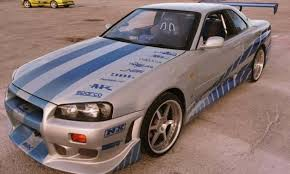

O Toyota Supra surgiu em 1978, com desenvolvimento baseado na plataforma do Toyota Celica
porém com algumas características próprias e que viriam mais tarde serem as responsáveis pelo
sucesso que o carro alcançou. As primeiras diferenças que se notaram foram em tamanho, pois o
Supra era mais comprido e largo que o Celica. Mecanicamente recebeu suspensão independente
nas quatro rodas, bem como freios a disco também nas quatro.
Quarta geração (A80)
Toyota Supra da quarta geração.
Visão geral:
Produção 1993–2002
Modelo:
Designer Isao Tsuzuki (1990)[3]
Ficha técnica:
Motor 6 cilindros em linha de 2997 cc
Transmissão Manual de 5 ou 6 velocidades
Automática de 4 velocidades
Dimensões:
Comprimento 4515–4520 mm
Entre-eixos 2550 mm
Largura 1810 mm
Altura 1275 mm
Peso 1410-1570 kg
Preço:
R$ 30.042,00
O Skyline GT-R R34 é uma versão esportiva de grande prestígio do Nissan Skyline. A versão GT-R
possui o motor Nissan RB26DETT, de 6 cilindros em linha com biturbo. A sigla GT-R surgiu depois de
uma vitória da Nissan em 1964 com o S54 2000 GT-B. Em 1973 o modelo GT-R deixou de ser
produzido. 16 anos depois a Nissan traz a sigla GT-R de volta com o modelo Nissan Skyline GT-R
R32 com o motor RB26DETT e tração 4WD e um motor de 280 HP. A geração R32, também
chamada de Godzila, foi até 1994, ano em que foi substituída pelo R33 que muitos reclamaram
devido ao peso e tamanho. Em 1998 o R33 foi substituído pelo R34, o mais perfeito GT-R devido a
potencia do R33 e tamanho reduzido próximo ao R32. Sua produção foi interrompida em 2002. Em
2007 a Nissan divulgou o lançamento de um novo modelo GT-R em dezembro após o Tokyo Motor
Show com o motor VR38DETT, um motor 3.8 de 6 cilindros em V, dois turbos e 480 HP.

Nissan Skyline GTR R34
Visão geral:
Produção Nissan
Ficha técnica:
Motor 2568 cm3
Torque 392/4400 N*m/rpm
Dimensões:
Comprimento 4600 mm
Largura 1785 mm
Altura 2665 mm
Consumo 16 l/100kmc 9 l/100kme
Velocidade máxima 250 km/h 156 MPH
Preço:
R$ 2,9 milhões.
O Challenger é um modelo desportivo de duas portas de tamanho médio da Dodge. A sua produção
iniciou-se em 1970. Partilhando a sua plataforma (E-Body) com o Plymouth Barracuda o Dodge
Challenger impressionou pela sua vasta gama de motorizações. A versão R/T (Road/Track) dispunha
de motores, todos eles V8 desde o de 335cv, o de 375cv, com um carburador de quatro corpos,
Magnum 440 e o topo de linha 426 Hemi V8 de 425cv. A Dodge ainda construiu a versão T/A (Trans
Am), a qual era vendida quase idêntica à que a Dodge competia no campeonato Trans Am. O
primeiro carro que levava o nome Challenger foi a introdução no meio do ano de 1959 uma edição
limitada de Dodge Challenger Prata. Este foi um modelo de seis cilindros ou V8 disponível apenas
na pintura de prata e apenas em um corpo de duas portas. Ele veio com recursos extras, sem
nenhum custo, incluindo pneus premium parede branca, as tampas das rodas completas, limpadores
de pára-brisas elétricos, bem como um interior atualizado com tecidos de luxo e de parede a parede
carpete profundo. Em 1971 o Challenger foi reestilizado, tendo também devido às leis de emissão de
gases, ter reduzido a sua potência. 1972 foi um mau ano para o Challenger, tendo a Dodge acabado
com a versão conversível e a R/T. A versão mais potente do Challenger oferecia agora modestos
440cv. Em substituição do R/T a Dodge lançou a versão Rally, com parcos 150cv. Em 1974 o
Challenger desapareceu, deixando saudades por todos os entusiastas deste modelo da Dodge.
Dodge Challenger
Dodge Challenger Hellcat 2015
Visão geral
Produção 1970-1974
1978-1983 (Japão)
2008-presente
Fabricante Dodge, grupo Fiat Chrysler Automobiles
Matriz Auburn Hills, Michigan, Estados Unidos
Montagem Auburn Hills, Michigan, Estados Unidos
Modelo
Classe Esportivo
Muscle car
Modelos relacionados Ford Mustang
Chevrolet Camaro
Pontiac GTO
Plymouth Barracuda
Toyota Supra
Dodge challenger
Preço:
R$ 1.690.000